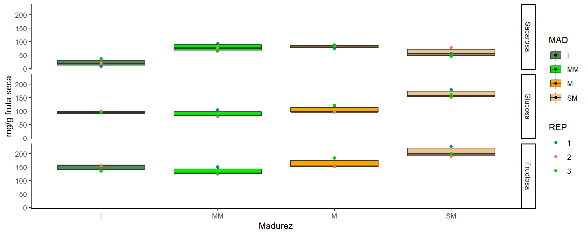
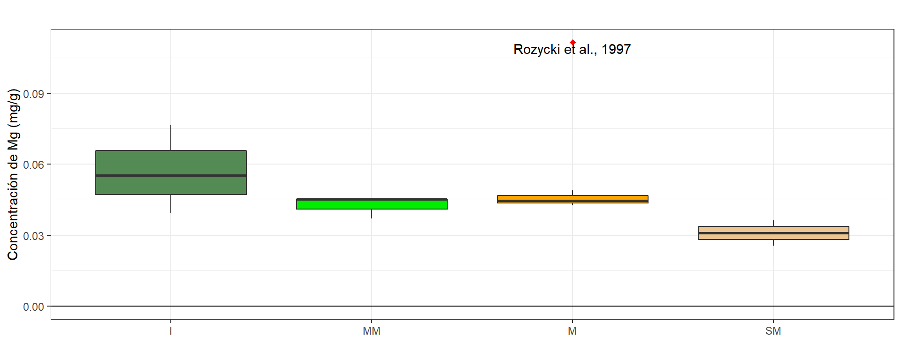

Maturity
The aim of this work was to study the evolution of fruit size and weight together with the soluble solid and total titratable acidity contents with the patterns of accumulation of chlorophylls, carotenoids, phenols and antioxidant activity during ripening of Hexachlamys edulis fruits, to understand the optimal time and conditions needed to obtain maximum nutraceutical characteristics. Fruits were harvested from H. edulis plants growing at the experimental field of the University of Morón (Moreno, Buenos Aires, 34°35’4.98" SL, 58°48’52.09" WL, 14 m.a.s.l.).
Variables físicas
Peso fresco del fruto (PFF)
Tabla resumen
## MADUREZ N PFF sd se ci
## 1 Inmaduro 10 19.46590 8.371828 2.647404 5.988845
## 2 Medio Maduro 10 40.12070 7.611044 2.406823 5.444613
## 3 Maduro 10 39.55260 17.661441 5.585038 12.634234
## 4 SobreMaduro 7 38.50057 10.492754 3.965888 9.704179Gráfico con desvío estándar


Relacion media-varianza

Modelos
- M0: modelo sólo con el factor fijo madurez.
- M1: M0 + modelado de la varinza por varIdent
Eleccción de modelos por AIC
## df AIC
## M0 5 293.6096
## M1 8 273.1772Se elije el modelo M1
Verificación de supuestos

##
## Shapiro-Wilk normality test
##
## data: e
## W = 0.93662, p-value = 0.03605## Levene's Test for Homogeneity of Variance (center = mean)
## Df F value Pr(>F)
## group 3 2.0968 0.1195
## 33Anova
## Denom. DF: 33
## numDF F-value p-value
## (Intercept) 1 438.1966 <.0001
## MADUREZ 3 12.7130 <.0001Comparaciones a posteriori
## $emmeans
## MADUREZ emmean SE df lower.CL upper.CL
## Inmaduro 19.5 3.74 33 11.9 27.1
## Medio Maduro 40.1 3.74 33 32.5 47.7
## Maduro 39.6 3.74 33 31.9 47.2
## SobreMaduro 38.5 4.47 33 29.4 47.6
##
## Confidence level used: 0.95
##
## $contrasts
## contrast estimate SE df t.ratio p.value
## Inmaduro - Medio Maduro -20.655 5.29 33 -3.903 0.0024
## Inmaduro - Maduro -20.087 5.29 33 -3.796 0.0032
## Inmaduro - SobreMaduro -19.035 5.83 33 -3.264 0.0130
## Medio Maduro - Maduro 0.568 5.29 33 0.107 0.9995
## Medio Maduro - SobreMaduro 1.620 5.83 33 0.278 0.9924
## Maduro - SobreMaduro 1.052 5.83 33 0.180 0.9979
##
## P value adjustment: tukey method for comparing a family of 4 estimates
Peso seco de fruto (PSF)
Tabla resumen
## MADUREZ N PSF sd se ci
## 1 Inmaduro 10 4.140500 2.194326 0.6939069 1.569727
## 2 Medio Maduro 10 6.622500 2.345851 0.7418231 1.678120
## 3 Maduro 10 4.997900 2.840011 0.8980904 2.031622
## 4 SobreMaduro 7 6.506857 2.377224 0.8985063 2.198566Gráfico con desvío estándar


Relacion media-varianza

Modelos
- M0s: modelo sólo con el factor fijo madurez.
- M1s: M0 + modelado de la varinza por varIdent
- M1si: M1 con variable respuesta inversa (1/Y)
## df AIC
## M1s 8 177.17677
## M1si 8 -52.63631Se elije el modelo M1si
Verificación de supuestos

##
## Shapiro-Wilk normality test
##
## data: e
## W = 0.97956, p-value = 0.7162## Levene's Test for Homogeneity of Variance (center = mean)
## Df F value Pr(>F)
## group 3 0.1788 0.91
## 33Anova
## Denom. DF: 33
## numDF F-value p-value
## (Intercept) 1 329.0795 <.0001
## MADUREZ 3 5.1402 0.005Comparaciones a posteriori
## $emmeans
## MADUREZ emmean SE df lower.CL upper.CL
## Inmaduro 19.5 3.74 33 11.9 27.1
## Medio Maduro 40.1 3.74 33 32.5 47.7
## Maduro 39.6 3.74 33 31.9 47.2
## SobreMaduro 38.5 4.47 33 29.4 47.6
##
## Confidence level used: 0.95
##
## $contrasts
## contrast estimate SE df t.ratio p.value
## Inmaduro - Medio Maduro -20.655 5.29 33 -3.903 0.0024
## Inmaduro - Maduro -20.087 5.29 33 -3.796 0.0032
## Inmaduro - SobreMaduro -19.035 5.83 33 -3.264 0.0130
## Medio Maduro - Maduro 0.568 5.29 33 0.107 0.9995
## Medio Maduro - SobreMaduro 1.620 5.83 33 0.278 0.9924
## Maduro - SobreMaduro 1.052 5.83 33 0.180 0.9979
##
## P value adjustment: tukey method for comparing a family of 4 estimates
Variables químicas
The objective of this second part is to study the organic acids, carbohydrates and cations in the different stages of maturity.
Acidos orgánicos


Carbohidratos


Cationes
